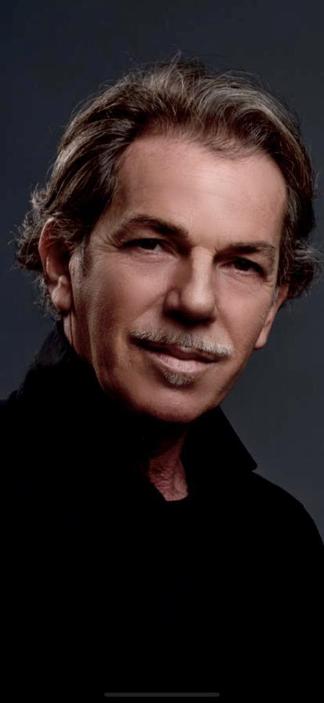
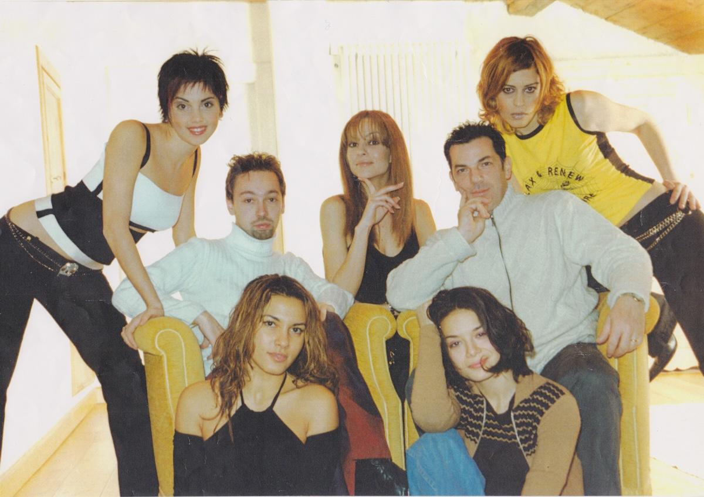
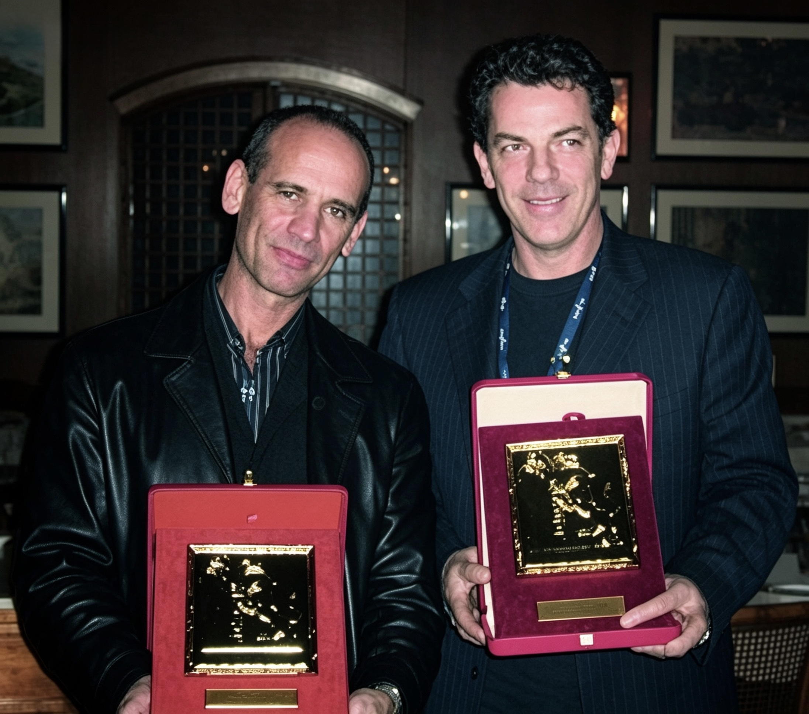
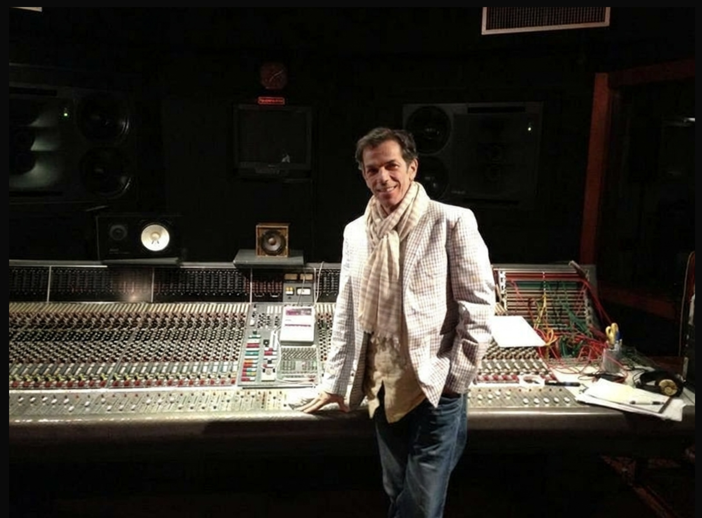
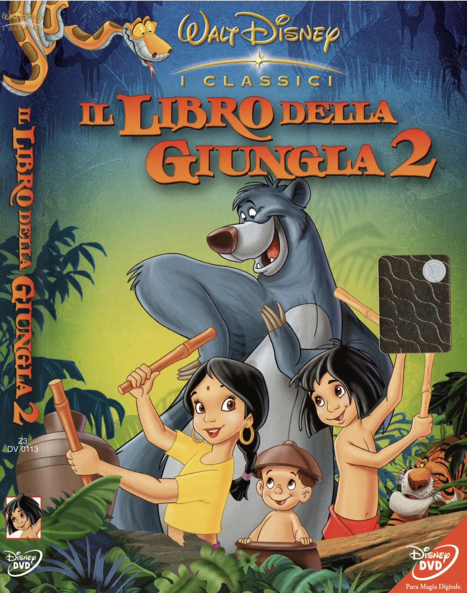
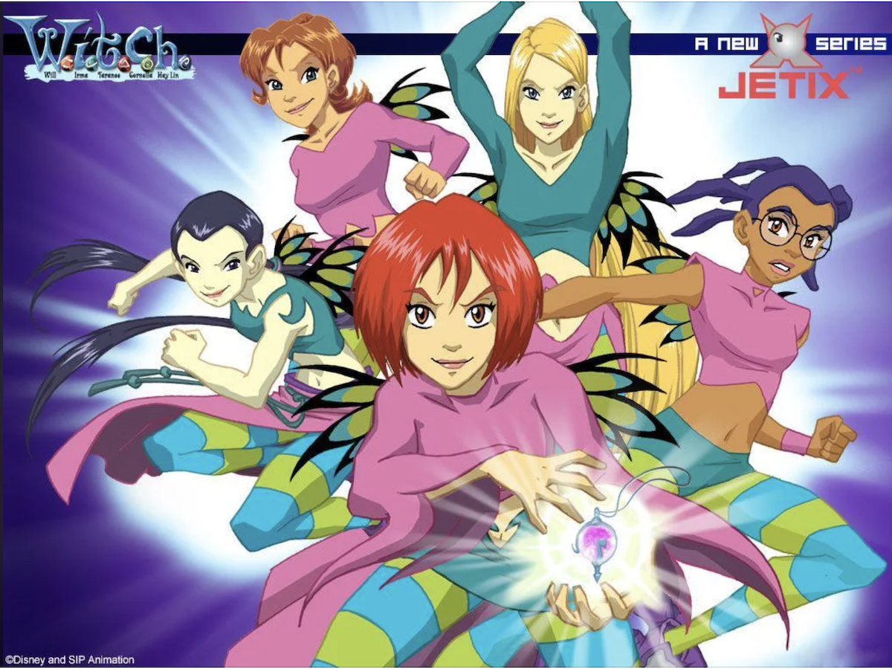
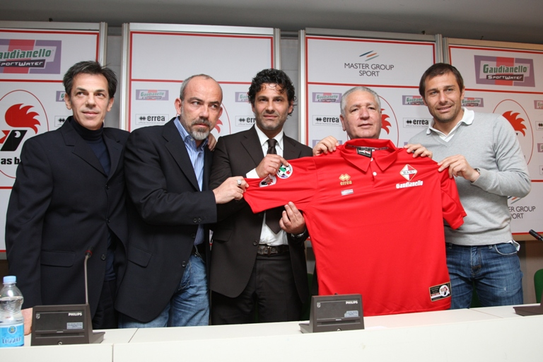
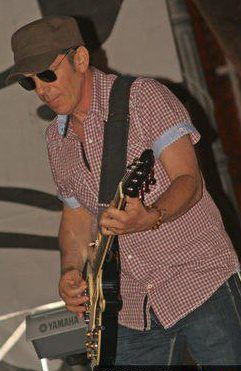
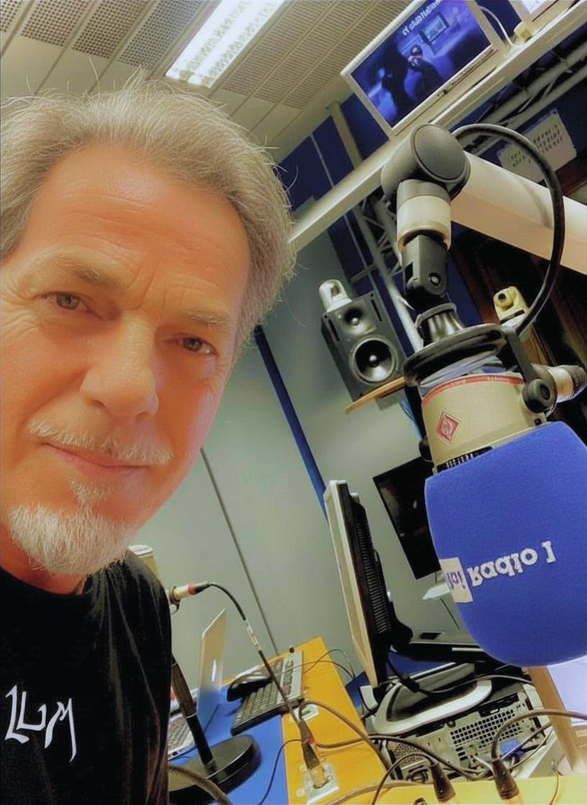
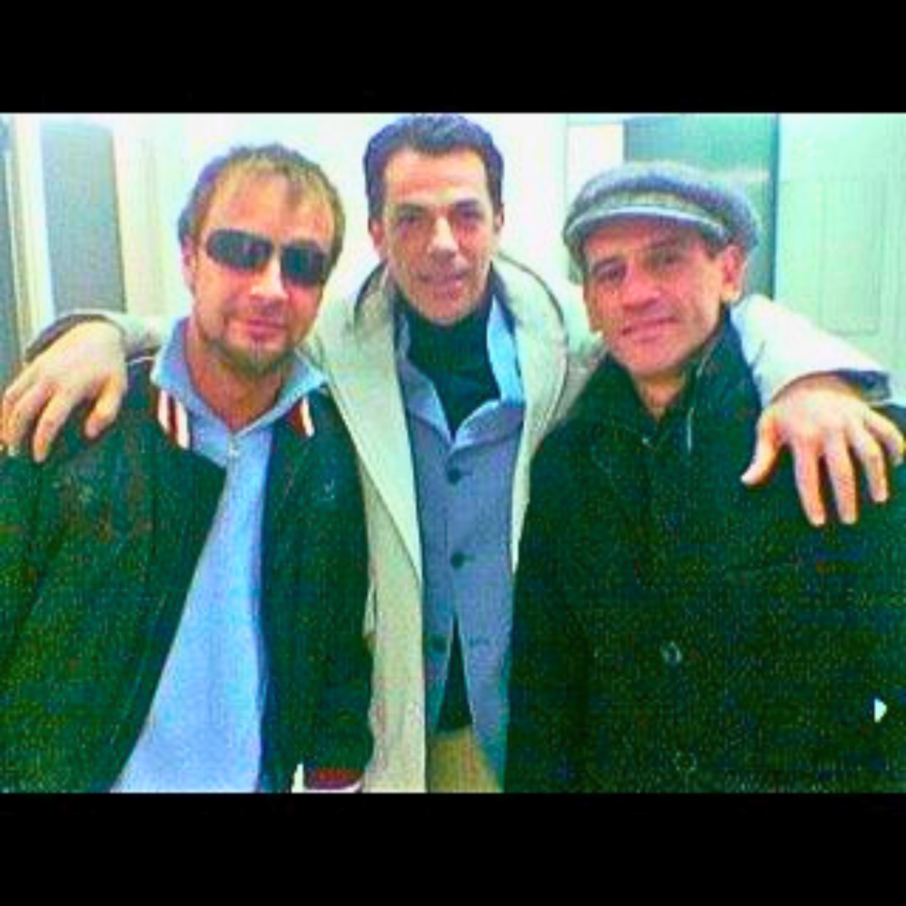

also known as MR. FROG Dance & Electronic
Produttore · Arrangiatore
Chitarrista · Compositore
Due volte sul palco


Successi discografici
Una selezione dei successi più significativi

Lollipop
"Batte Forte"
Sanremo 2002 · WEA / Warner
Autore, arrangiatore e produttore
Co-autori: V. Giorgilli, T. Blescia
Lollipop
"Credi a Me"
Walt Disney Records · 2003
Produzione e co-scrittura
Colonna sonora "Il Libro della Giungla 2"
Lollipop
"Together"
Warner Music Italy · 2004
Produzione e co-scrittura
Colonna sonora "Amici per sempre"
Mario Rosini
"Sei la vita mia"
Sanremo 2004 · Cafè Concerto / Sony
Co-autore e produttore
Dir. orchestra: M° Beppe Vessicchio
Lucky Star · Emma Marrone
"Stile"
Universal Music · 2003
Autore e produttore
Primo brano in assoluto di Emma Marrone
Saranno Famosi (Fame) · Amici 2003
Prima edizione Amici di Maria De Filippi
Saranno Famosi (2002) — Sugar Music / Universal Music Italia
Team: Luigi Rana, Vanni Giorgilli ed altri
Amici — I Ragazzi del 2003 — Sugar Music / Universal Music Italia
Team: Luigi Rana, Vanni Giorgilli ed altri
Marta Sánchez
"Tal Vez" · "La Noche Que Acabó"
Muxxic / Universal Spain · 2002–07
Scrittura e produzione con C. de Walden
Album "Soy Yo" · Album "Miss Sánchez"
Sarah Geronimo
"I Still Believe in Love"
Viva Records · Filippine · 2006
Team: Luigi Rana e Christian de Walden
Album "Becoming"
Rachelle Ann Go
"Alam Ng Ating Mga Puso"
Viva Records · Filippine · 2007
Arrangiamenti e tastiere
Album "Obsession"
Trini Lopez con Tony Renis
"Canción Azul"
PanaRecord / Sony · Los Angeles · 2001
Arrangiamento fiati con Demo Morselli
Con la collaborazione di Tony Renis
Corona
"Good Love"
PanaRecord / T.R. Entertainment · 2000
Arrangiamento e mix con Vanni Giorgilli
Progressive House / Euro-Trance
Selma Hernandes
"Musica pra Dançar" · "Num Segundo"
Just Ent. / Universo S.p.A. · 2009–10
Produzione con Vanni Giorgilli
"Num Segundo" — OST Doc. RAI TRADE Bossa Nova
Ha lavorato a Los Angeles con i musicisti più ricercati dell'industria discografica americana, portando nelle sue produzioni un livello tecnico e artistico di standard internazionale.
Cinema · TV · Pubblicità
Walt Disney
Il Libro della Giungla 2 (2003)
Credi a Me — Lollipop · Walt Disney Records
Proficua collaborazione con Roberto Morville — Buena Vista

Serie W.I.T.C.H. (Disney/Jetix)
W.I.T.C.H. Lucky Star con Emma Marrone

Mediaset · RAI
Doc. RAI TRADE — 50 anni della Bossa Nova - "Num segundo" - Selma Hernandes
Striscia la notizia: Stacchetto delle veline - "Musica pra dançar" - Selma Hernandes
Spot & Sport
Fiat · Conad · Saicaf · AS Bari
Spot pubblicitari nazionali · Inno ufficiale AS Bari — Promozione in Serie A (2008)

Luigi Rana — Direttore musicale e artistico del Tour "Toquinho & Selma Hernandes", celebrando i 50 anni di carriera del grande cantautore brasiliano (2017), del concerto "Selma Hernandes & Orquestra Ouro Preto" - Teatro Sesc Palladium, Belo Horizonte, Brasile, con la partecipazione del Maestro Nino Lepore, del tour "Caminho das Águas" con la partecipazione del contrabbassista Giuseppe Bassi, della partecipazione di Selma al World Wide Tour come special guest di Toninho Horta, nonché del nuovo tour "Samba Rosa" Italia/Brasile, con lo special guest Giuseppe Milici.
Produzione discografica
Album pubblicato · Saifam Group
"Sou da Paz"
Registrato al Mosh Studio, San Paolo - Brasile
Singoli
12 singoli pubblicati
Produzione e arrangiamento · Label: Sony Music · Just Entertainment · Universo S.p.A. e altre
Work in progress - 2026
"Caminho das Águas"
Nuovo album · produzione, arrangiamento e direzione artistica di Luigi Rana · Con la partecipazione di: Giuseppe Bassi — contrabbasso (Italia) · Sarah Akioshi — flauto (Giappone) · Scerù Wu — contrabbasso (Taiwan) · Vana Guierig — pianoforte (USA) · Gabriel Prado — percussioni (Brasile)
"Samba Rosa"
Album live in corso di registrazione durante il tour Samba Rosa - Italia/Brasile - 2026, con la partecipazione speciale dell'armonicista Giuseppe Milici e il Trio Unisono - Paolo Luiso (piano), Filippo De Salvo (basso e contrabbasso) e Saverio Petruzzelis (batteria).
Rete professionale
Partnership creativa di lunga durata con Vanni Giorgilli — produttore, compositore e fondatore di Subside Records. Decine di produzioni condivise nel corso degli anni, tra cui Batte Forte, Stile, Good Love, Together e molti altri.
V. G., Coolio, Rana
Subside Records · Fiuggi · ItaliaCollaborazione artistica con il leggendario Tony Renis — compositore, cantante e produttore di fama mondiale. Produzioni per Trini Lopez ("Canción Azul") e Corona ("Good Love") — etichetta PanaRecord, Los Angeles.
PanaRecord · Los Angeles · USAIn ambito Dance, House ed Elettronica Luigi Rana è Mr. Frog. Produzioni congiunte lungo la carriera con Vanni G, DJ Molella, DJ Provenzano, Jean Moiré, Dual Beat, Zeeo, Giuseppe Milano (Luiran).
Dance · Electronic · House · LatinCollaborazioni con Direttori d'Orchestra
Leonardo De Amicis
Orchestra del Festival di Sanremo
Bruno Santori
Orchestra del Festival di Sanremo
Rodrigo Toffolo
Concerto Selmah & Orquestra Ouro Preto · Belo Horizonte, Brasile
Nino Lepore
Concerto Selmah & Orchestra Ouro Preto · Belo Horizonte, Brasile
M. Morra
Concerto per la Pace · Toquinho e Selma Hernandes con l'Orchestra Metropolitana di Bari · Foggia, Italia
Dove nasce la musica
Utilizzati nel corso degli anni


Le origini
All'età di 13 anni forma una band di nome "Little Stars". Come chitarrista fa il primo tour in Canada, dove incide il suo primo disco "45 giri" prodotto dalla RCA.
A 18 anni inizia a lavorare come chitarrista turnista con vari artisti di fama nazionale, tra cui Zucchero, Anna Oxa, Franco Califano e molti altri.
A 21 anni si trasferisce a Milano ed inizia il tour con la cantante rock inglese Miranda Johns, avviando il percorso che lo porterà verso la produzione e l'arrangiamento.
Nel 1981 apre il suo primo studio a Modugno (BA), avviando fin da subito un percorso che unisce la ricerca del suono alla visione artistica. Nel 1993 nasce la collaborazione con i fratelli Bernardi a Bari, nello studio Crescendo. Nel 2000 inaugura il Frog Studio a Bari e avvia una lunga e proficua collaborazione con Vanni Giorgilli di Subside Records a Fiuggi. Da quel momento in poi lavora in molti studi in tutta Italia, sempre alla ricerca del suono perfetto per ogni progetto.
Negli anni Duemila si afferma come produttore e autore. Nel 2002 firma "Batte Forte" delle Lollipop — oggi a 3,3 miliardi di streaming su TikTok Asia — e la colonna sonora Disney de "Il Libro della Giungla 2". Nel 2004 conquista il secondo posto a Sanremo con "Sei la vita mia" di Mario Rosini, vincendo Premio Volare, Premio Mia Martini e Palma d'Oro. Nello stesso anno il singolo "Stile" di Lucky Star — da lui prodotto — segna il debutto assoluto di Emma Marrone.
Nel 2005–07 raggiunge il mercato internazionale con Marta Sánchez (multiplatino in Spagna), Sarah Geronimo (Disco di Platino nelle Filippine) e Rachelle Ann Go (Disco d'Oro, Myx Music Award). A Los Angeles collabora con i musicisti Vinnie Colaiuta, Abraham Laboriel, Randy Waldman, Tim Pierce e James Harrah.
Dal 2007 produce tutti i progetti della cantautrice brasiliana Selmah (Selma Hernandes): 12 singoli, l'album "Sou da Paz" (Saifam Group, 2016, registrato al Mosh Studio di San Paolo), i tour con Toquinho e con l'Orquestra Ouro Preto a Belo Horizonte. Attualmente dirige il progetto "Samba Rosa" — in tour nel 2026 in Italia e Brasile — e finalizza l'album "Caminho das Águas" con musicisti da 5 Paesi.
In ambito Dance ed Elettronica opera come Mr. Frog, con collaborazioni con Vanni G, DJ Molella, Jean Moiré, Dual Beat, Zeeo e altri.
Puglia, Italia — Giugno 2026

Masini, Rana e Rosini
Opere selezionate fra più di 700 brani
Contatti & Social
Per collaborazioni, produzioni e management